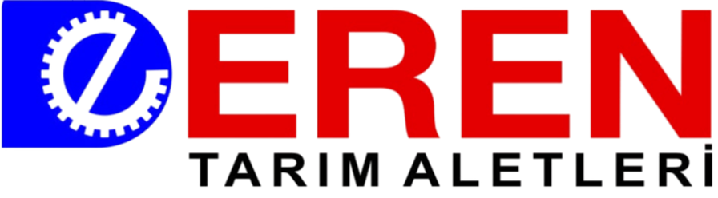
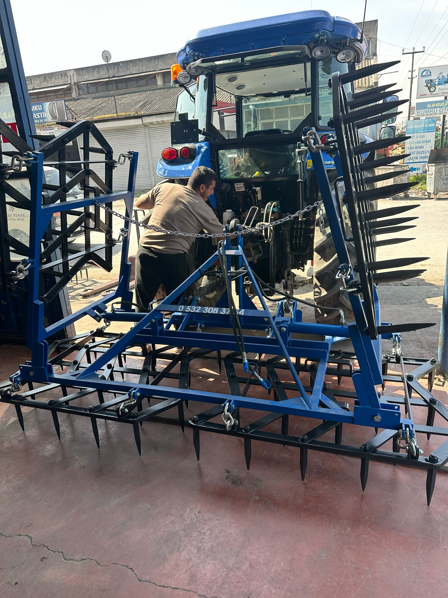
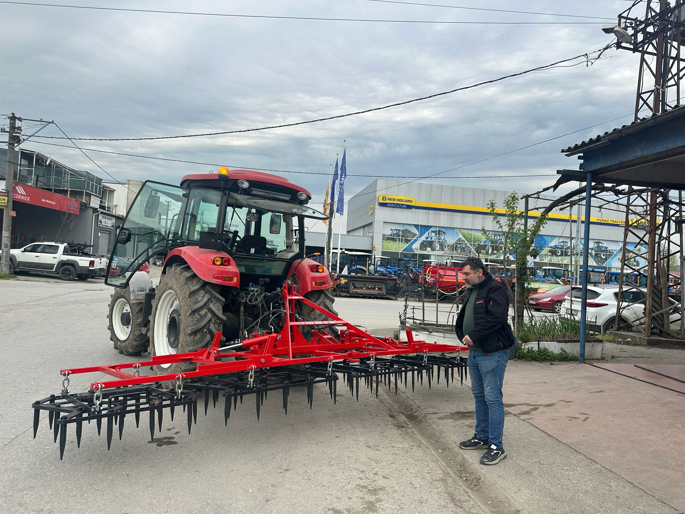
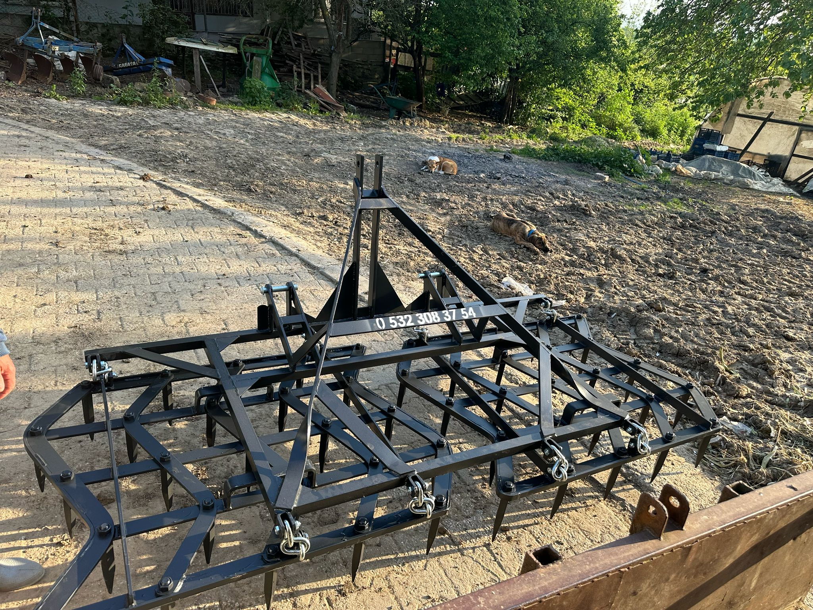
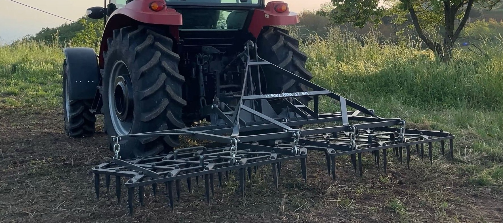

Ağır hizmet tipi özel alaşımlarla dövülen 50’lik Dişi Tırmık serimiz, traktörünüzün performansını tam verimle toprağa yansıtır; en zorlu arazileri dahi ekime hazır hale getirir.
Eren Tarım Aletleri olarak, logomuzdaki çarklar gibi durmaksızın üretiyor, toprağa bereket katıyoruz.
Her bir traktör arkası ekipmanımız, tarlada karşılaşılabilecek en zorlu sert toprak koşulları düşünülerek yüksek dayanımlı metallerle üretilir. Tüm ürünlerimizde, uzun ömürlülük ve işçilik kalitesi birinci önceliğimizdir.
Yüksek mukavemetli tarım aletlerini tam zamanında ve en yüksek kaliteyle üretmek.
Dayanıklılık denince akla gelen ilk marka olarak Türk tarımına yön vermek.




Fiyat bilgisi, lojistik süreçler ve sipariş detayları için doğrudan iletişime geçebilirsiniz.
Zirai Aletler San. Sit. C/4 Blok 1265. Sk. No:14 Adapazarı / Sakarya
Siparişleriniz en sağlam şekilde doğrudan adresinize teslim edilir.